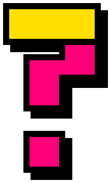

<!doctype html>
<!--
  WhatsUpDurbs reel clips. Open with ?clip=<name> and call window.render(t) for t in seconds;
  render.cjs does this for every frame. Clip names and lengths are in CLIPS below.
-->
<html>
<head>
<meta charset="utf-8">
<style>
  @font-face { font-family: "Archivo Black"; src: url("../../assets/fonts/ArchivoBlack-Regular.ttf"); }
  @font-face { font-family: "Space Grotesk"; src: url("../../assets/fonts/SpaceGrotesk-Bold.ttf"); font-weight: 700; }
  :root { --y: #FFE600; --p: #FF2E93; --c: #00F0FF; --v: #8A2BE2; }
  * { box-sizing: border-box; margin: 0; padding: 0; }
  html, body { width: 1080px; height: 1920px; overflow: hidden; background: transparent; }
  body { font-family: "Space Grotesk", "Noto Color Emoji", sans-serif; font-weight: 700; color: #000; }
  #stage { position: relative; width: 1080px; height: 1920px; overflow: hidden; }
  .abs { position: absolute; }
  .d { font-family: "Archivo Black", "Noto Color Emoji", sans-serif; text-transform: uppercase; letter-spacing: -0.02em; line-height: 0.95; }
  .box { border: 10px solid #000; box-shadow: 18px 18px 0 #000; }
  .dots { background-image: radial-gradient(rgba(0,0,0,.13) 3px, transparent 3.5px); background-size: 44px 44px; }
  .chip { padding: 14px 28px; font-size: 42px; border: 8px solid #000; box-shadow: 12px 12px 0 #000; white-space: nowrap; }
  .logo { display: flex; align-items: center; gap: 16px; background: #fff; padding: 18px 34px; font-size: 66px; }
  .logo img { height: 92px; }
</style>
</head>
<body>
<div id="stage"></div>
<script>
const W = 1080, H = 1920;
const stage = document.getElementById("stage");

/* ---------- helpers ---------- */
const clamp = (v, a = 0, b = 1) => Math.min(b, Math.max(a, v));
/** Progress 0..1 of t within [start, start + dur]. */
const prog = (t, start, dur) => clamp((t - start) / dur);
const easeOutBack = (x) => { const c1 = 1.9, c3 = c1 + 1; return x <= 0 ? 0 : x >= 1 ? 1 : 1 + c3 * (x - 1) ** 3 + c1 * (x - 1) ** 2; };
const easeOutCubic = (x) => 1 - (1 - x) ** 3;
const easeInCubic = (x) => x ** 3;
const easeInOut = (x) => (x < 0.5 ? 4 * x ** 3 : 1 - (-2 * x + 2) ** 3 / 2);
const lerp = (a, b, x) => a + (b - a) * x;

function el(html, style = {}) {
  const t = document.createElement("template");
  t.innerHTML = html.trim();
  const node = t.content.firstElementChild;
  Object.assign(node.style, style);
  stage.appendChild(node);
  return node;
}
function tf(node, { x = 0, y = 0, s = 1, r = 0, o = 1 } = {}) {
  node.style.transform = `translate(${x}px, ${y}px) rotate(${r}deg) scale(${s})`;
  node.style.opacity = o;
}
/** Stamp in: big and invisible → normal size, with overshoot. */
function stamp(node, t, start, base = {}) {
  const p = prog(t, start, 0.22);
  tf(node, { ...base, s: (base.s ?? 1) * lerp(2.2, 1, easeOutBack(p)), o: p > 0 ? 1 : 0 });
}
/** Pop in: from nothing, with overshoot. */
function pop(node, t, start, base = {}) {
  const p = prog(t, start, 0.28);
  tf(node, { ...base, s: (base.s ?? 1) * easeOutBack(p), o: p > 0 ? 1 : 0 });
}
const LOGO = `<div class="logo box d"><span>WhatsUp<span style="color:var(--p)">Durbs</span></span></div>`;

/* ---------- colour-bar wipe used by several clips ---------- */
function makeBars(colors = ["var(--y)", "var(--p)", "var(--c)"]) {
  const h = Math.ceil(H / colors.length) + 40;
  return colors.map((c, i) =>
    el(`<div class="abs" style="left:-40px;top:${i * (h - 40) - 20}px;width:${W + 80}px;height:${h}px;background:${c};border:12px solid #000"></div>`),
  );
}
/** cover: 0 → bars off right, 1 → covering the screen. uncover: 0 → covering, 1 → off left. */
function barsAt(bars, t, inStart, inDur, outStart, outDur) {
  bars.forEach((b, i) => {
    const stagger = i * 0.05;
    const pin = easeOutCubic(prog(t, inStart + stagger, inDur));
    const pout = easeInCubic(prog(t, outStart + stagger, outDur));
    const x = t < outStart + stagger ? lerp(W + 120, 0, pin) : lerp(0, -W - 120, pout);
    tf(b, { x });
  });
}

/* ---------- clips ---------- */
const CLIPS = {
  intro: {
    duration: 3.0,
    transparent: false,
    setup() {
      stage.style.background = "#000";
      this.bg = el(`<div class="abs dots" style="inset:0;background-color:var(--y)"></div>`);
      this.logo = el(`<div class="abs" style="left:0;right:0;top:300px;display:flex;justify-content:center">${LOGO}</div>`);
      this.l1 = el(`<div class="abs d" style="left:80px;top:560px;font-size:190px">What's</div>`);
      this.l2 = el(`<div class="abs d" style="left:80px;top:750px;font-size:190px">on this</div>`);
      this.l3 = el(`<div class="abs d" style="left:70px;top:950px;font-size:210px;background:#000;color:var(--y);padding:6px 26px">week</div>`);
      this.sticker = el(`<div class="abs d box" style="left:560px;top:1210px;font-size:70px;padding:20px 36px;background:var(--p);color:#fff">Durban 🌊</div>`);
      const chips = [
        ["🛍️ Markets", "var(--c)", 70, 1420, -5], ["🎤 Gigs", "#fff", 470, 1450, 4],
        ["🪩 Parties", "var(--v)", 690, 1400, -3], ["🏃 Park runs", "#FF8A00", 120, 1560, 3],
        ["🚗 Car meets", "#FF3B30", 560, 1570, -4],
      ];
      this.chips = chips.map(([label, bg, x, y, r]) => ({
        node: el(`<div class="abs chip" style="left:${x}px;top:${y}px;background:${bg};${bg === "var(--v)" || bg === "#FF3B30" ? "color:#fff" : ""}">${label}</div>`),
        r,
      }));
      this.bars = makeBars(["var(--p)", "var(--c)", "var(--y)"]);
    },
    render(t) {
      // Yellow wipes up from the bottom.
      tf(this.bg, { y: lerp(H, 0, easeOutCubic(prog(t, 0, 0.3))) });
      const pl = prog(t, 0.2, 0.45);
      tf(this.logo, { y: lerp(-500, 0, easeOutBack(pl)), r: lerp(-8, -2, pl), o: pl > 0 ? 1 : 0 });
      stamp(this.l1, t, 0.55);
      stamp(this.l2, t, 0.72);
      stamp(this.l3, t, 0.9, { r: -2 });
      pop(this.sticker, t, 1.2, { r: 6 });
      this.chips.forEach((c, i) => pop(c.node, t, 1.4 + i * 0.08, { r: c.r }));
      // Bars cover the screen by the end, ready for a hard cut to the first event.
      barsAt(this.bars, t, 2.55, 0.3, 99, 1);
    },
  },

  outro: {
    duration: 3.6,
    transparent: false,
    setup() {
      stage.style.background = "var(--p)";
      el(`<div class="abs dots" style="inset:0;background-color:var(--p)"></div>`);
      this.l1 = el(`<div class="abs d" style="left:80px;top:330px;font-size:150px;color:#fff;-webkit-text-stroke:6px #000;text-shadow:12px 12px 0 #000">Find more</div>`);
      this.l2 = el(`<div class="abs d" style="left:80px;top:480px;font-size:150px;color:#fff;-webkit-text-stroke:6px #000;text-shadow:12px 12px 0 #000">jols on</div>`);
      this.card = el(`<div class="abs d box" style="left:80px;right:80px;top:700px;font-size:88px;padding:34px 0;text-align:center;background:#fff">WhatsUp<span style="color:var(--p)">Durbs</span></div>`);
      this.url = el(`<div class="abs d" style="left:0;right:0;top:940px;text-align:center;font-size:52px"><span style="background:#000;color:var(--y);padding:12px 26px">whatsupdurbs.vercel.app</span></div>`);
      this.sticker = el(`<div class="abs d box" style="left:90px;top:1150px;font-size:58px;padding:22px 34px;background:var(--y)">List your event free ⚡</div>`);
      this.mark = el(``);
      this.follow = el(`<div class="abs d" style="left:90px;top:1400px;font-size:60px;color:#fff;-webkit-text-stroke:3px #000">Follow for<br>weekly jols 👀</div>`);
      this.bars = makeBars(["var(--y)", "var(--c)", "var(--p)"]);
    },
    render(t) {
      // Bars start covering (continuing from the last transition) and slide away.
      barsAt(this.bars, t, -1, 0.01, 0.0, 0.35);
      stamp(this.l1, t, 0.35);
      stamp(this.l2, t, 0.5);
      pop(this.card, t, 0.7, { r: -2 });
      const pu = prog(t, 0.95, 0.25);
      tf(this.url, { y: lerp(80, 0, easeOutBack(pu)), o: pu > 0 ? 1 : 0 });
      pop(this.sticker, t, 1.2, { r: -4 });
      const pm = prog(t, 1.4, 0.4);
      tf(this.mark, { s: easeOutBack(pm), r: lerp(-200, 8, easeOutCubic(pm)), o: pm > 0 ? 1 : 0 });
      stamp(this.follow, t, 1.7);
    },
  },

  "transition-blocks": {
    duration: 0.8,
    transparent: true,
    setup() { this.bars = makeBars(); },
    render(t) { barsAt(this.bars, t, 0, 0.26, 0.44, 0.22); },
  },

  "transition-stripes": {
    duration: 0.8,
    transparent: true,
    setup() {
      const colors = ["var(--y)", "#000", "var(--p)", "#000", "var(--c)", "#000"];
      const stripes = Array.from({ length: 36 }, (_, i) =>
        `<div style="width:${i % 2 ? 50 : 140}px;height:100%;background:${colors[i % colors.length]}"></div>`).join("");
      this.group = el(`<div class="abs" style="left:${W / 2 - 1700}px;top:${H / 2 - 2200}px;width:3400px;height:4400px;display:flex">${stripes}</div>`);
    },
    render(t) {
      // Half-width 1700 vs half the screen diagonal (~1100): covered while |x| < 600.
      // Fast in, slow through the middle (screen covered ~40% of the time), fast out; clear by the last frame.
      const v = clamp((t / 0.766) * 2 - 1, -1, 1);
      const x = -2800 * (0.4 * v + 0.6 * v ** 3);
      this.group.style.transform = `rotate(-20deg) translateX(${x}px)`;
    },
  },

  "transition-slam": {
    duration: 0.8,
    transparent: true,
    setup() {
      this.panel = el(`<div class="abs dots" style="inset:0;background-color:var(--y);border-bottom:14px solid #000"></div>`);
      this.card = el(`<div class="abs d box" style="left:110px;top:800px;width:860px;padding:40px 0;text-align:center;font-size:120px;background:var(--p);color:#fff">Next up →</div>`);
    },
    render(t) {
      const pin = easeOutCubic(prog(t, 0, 0.3));
      const pout = easeInCubic(prog(t, 0.48, 0.26));
      tf(this.panel, { y: t < 0.48 ? lerp(-H - 20, 0, pin) : lerp(0, -H - 20, pout) });
      const pc = prog(t, 0.2, 0.18);
      tf(this.card, {
        s: t < 0.48 ? lerp(2.4, 1, easeOutBack(pc)) : 1,
        r: lerp(10, -3, pc),
        y: t < 0.48 ? 0 : lerp(0, -H - 400, pout),
        o: pc > 0 ? 1 : 0,
      });
    },
  },

  "transition-box": {
    duration: 0.8,
    transparent: true,
    setup() {
      this.outer = el(`<div class="abs" style="left:${W / 2 - 300}px;top:${H / 2 - 300}px;width:600px;height:600px;background:var(--c);border:16px solid #000;box-shadow:30px 30px 0 #000"></div>`);
      this.inner = el(`<div class="abs" style="left:${W / 2 - 300}px;top:${H / 2 - 300}px;width:600px;height:600px;background:var(--p);border:16px solid #000"></div>`);
    },
    render(t) {
      // Scale 4.2 × 600px ≈ 2500px, wider than the screen diagonal, so it covers the frame.
      const grow = easeOutCubic(prog(t, 0, 0.34));
      const shrink = easeInCubic(prog(t, 0.44, 0.3));
      const s = t < 0.44 ? lerp(0, 4.4, grow) : lerp(4.4, 0, shrink);
      tf(this.outer, { s, r: lerp(-12, 12, t / 0.8) });
      const si = t < 0.42 ? lerp(0, 4.2, easeOutCubic(prog(t, 0.08, 0.3))) : lerp(4.2, 0, easeInCubic(prog(t, 0.42, 0.28)));
      tf(this.inner, { s: si, r: lerp(8, -8, t / 0.8) });
    },
  },

  "overlay-this-week": {
    duration: 2.0,
    transparent: true,
    setup() {
      this.badge = el(`<div class="abs d box" style="left:60px;top:270px;font-size:58px;padding:16px 30px;background:var(--y)">This week 🔥</div>`);
    },
    render(t) {
      // Seamless loop: a gentle wobble over exactly one period.
      const a = Math.sin((t / 2.0) * Math.PI * 2);
      tf(this.badge, { r: -4 + a * 3, s: 1 + Math.abs(a) * 0.04 });
    },
  },
};

const name = new URLSearchParams(location.search).get("clip") || "intro";
const clip = CLIPS[name];
clip.setup();
window.CLIP = { name, duration: clip.duration, transparent: clip.transparent, all: Object.keys(CLIPS) };
window.render = (t) => clip.render(t);
window.render(0);
</script>
</body>
</html>
